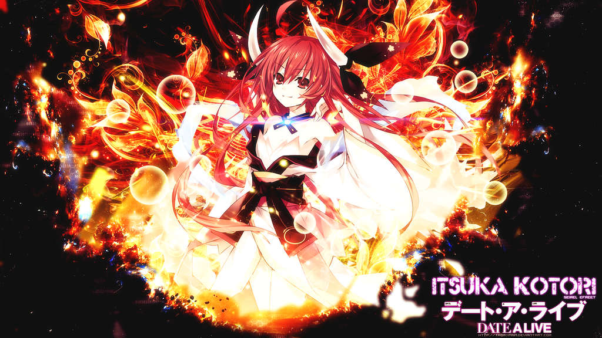
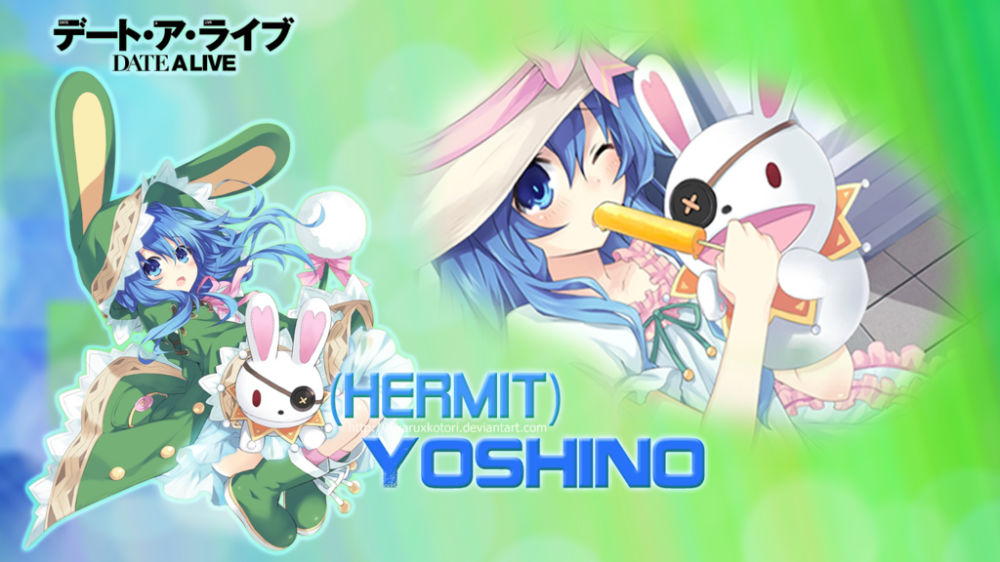
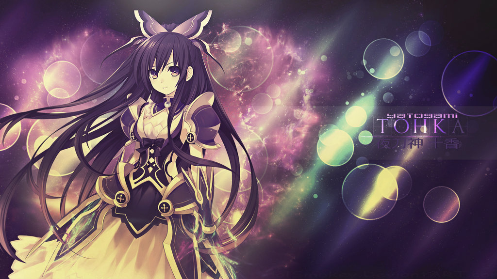
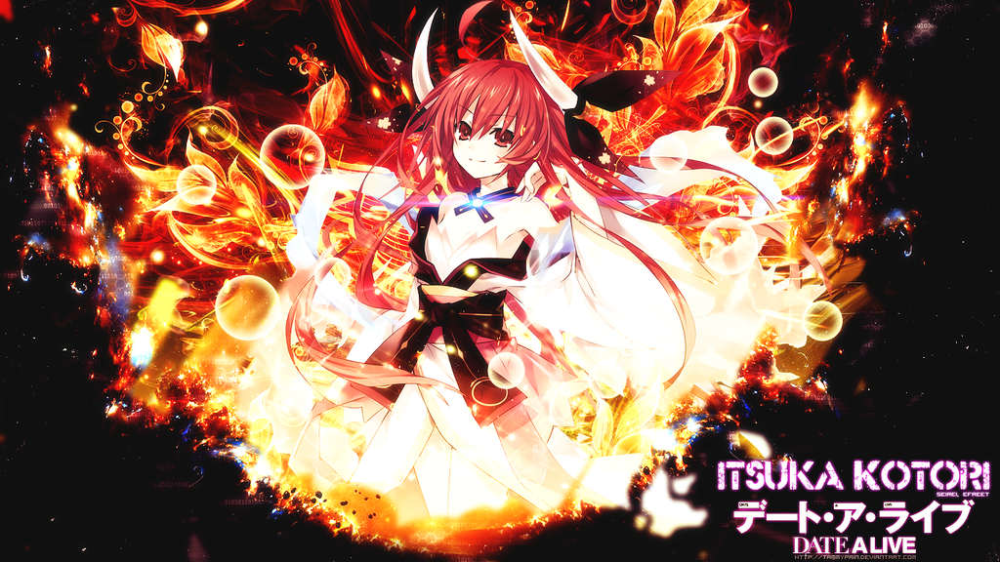
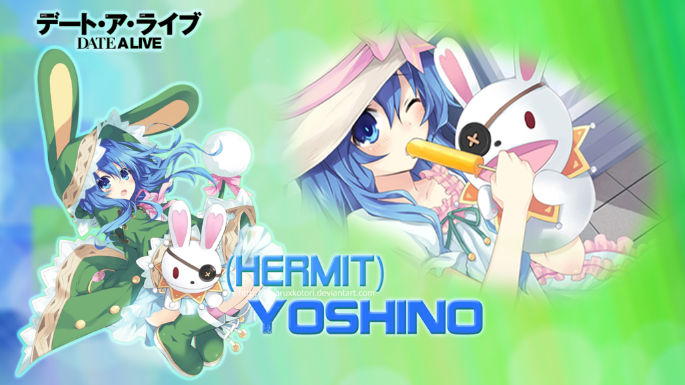
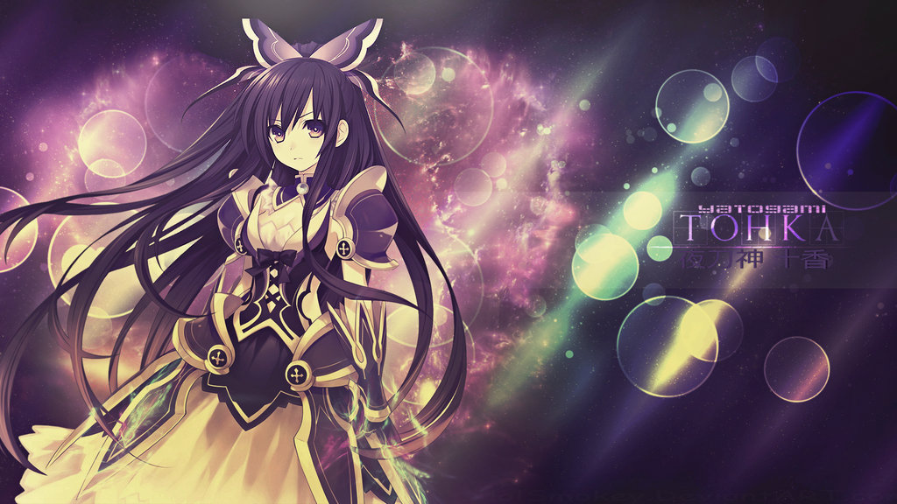

Tokisaki Kurumi
Kurumi Tokisaki (Tokisaki Kurumii) Adalah Roh ketiga yang muncul. Karena tindakannya yang brutal, dia disebut sebagai Roh Terburuk (最 悪 の 精 霊, Saiaku no Seirei). Dia juga merupakan Spirit pertama yang muncul sebagai antagonis dalam serial Date A Live.